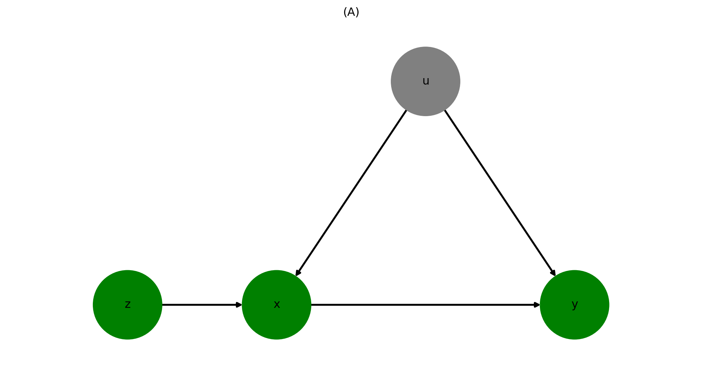
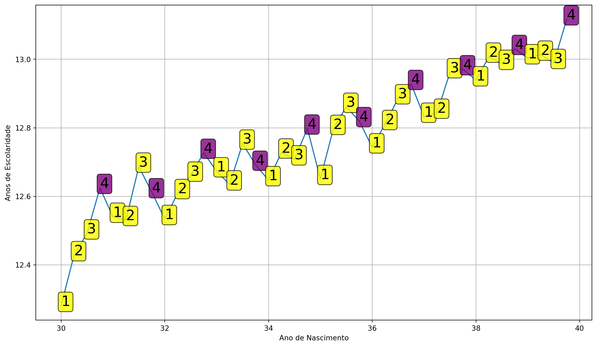
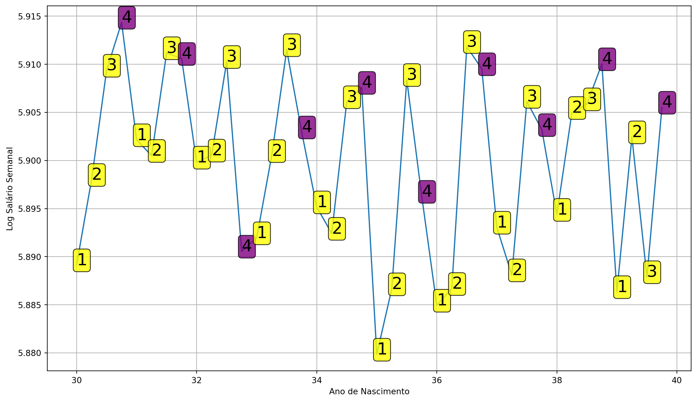

Econometria III
Variáveis Instrumentais
Rafael Bressan
Preparando a cena
Nos capítulos 7, 8 e 9 do livro
Introduction to Econometrics with Ré falado sobre os méritos dos métodos experimentais.Experimentos aleatorizados (RCTs) ou configurações Quasi-experimentais (tão bons quanto aleatórios) nos permitem estimar efeitos causais.
Se as pessoas tiverem algum tipo de opção sobre a ingestão do tratamento, haverá seleção.
RCTs podem quebrar a auto-seleção de pessoas em tratamento, designando-as aleatoriamente.
Então, com dados experimentais, temos uma boa solução.
E os dados não experimentais?
Dados não experimentais
Falamos sobre viés de variável omitida.
E se houver correlação entre uma variável no termo de erro \(u\), \(x_2\) digamos, e nossa variável explicativa \(x_1\)?
Obteremos estimativas tendenciosas porque não podemos separar o que é o quê: efeito de \(x_1\), ou de \(x_2\)?
Lembre-se de que isso pode ser tão grave que nem conseguimos o sinal correto de um efeito.

- VI fornece uma solução para VVO.
Endogeneidade
- Sempre que uma variável explicativa em uma regressão múltipla for correlacionada com o termo de erro, dizemos que esta variável é endógena
\[ y=\beta_0+\beta_1 x_1 + \beta_2 x_2 + \ldots + \beta_k x_k + \varepsilon \]
\(E[\varepsilon \mid x_1, \ldots x_k]\neq 0\)
Endogeneidade pode ocorrer por diversos motivos:
- Forma funcional mal especificada
- Omissão de variável relevante
- Erro de medida nos regressores
- Determinação simultânea entre variável dependente e independentes
RCT Resolve Endogeneidade
Considere uma especifcação linear para estimar o efeito causal de \(x\) em \(y\) \[y=\beta_0 +\beta_1 x + \varepsilon\]
Com dados observacionais é fácil imaginar que omitimos diversas variáveis que ajudam a explicar \(y\) e são correlacionadas com \(x\). \(E[\varepsilon\mid x]\neq 0\).
- ⚠️ Endogeneidade
Quando realizamos um experimento aleatorizado, \(x\) para a ser uma variável atribuída de forma independente de qualquer outro possível regressor omitido. \(E[\varepsilon\mid x]=0\).
- \(x\) passou a ser um regressor exógeno
- \(\beta_1\) pode ser interpretado como efeito causal de \(x\) em \(y\)
Modelo de Transmissão do Cólera de Snow
Suponha que \(c_i\) assuma o valor 1 se o indivíduo \(i\) morrer de cólera, 0 caso contrário.
Seja \(w_i = 1\) significando que o abastecimento de água de \(i\) é impuro e \(w_i = 0\) vice-versa. A pureza da água é avaliada com uma tecnologia que não detecta pequenos micróbios.
Colete em \(u_i\) todos os fatores não observáveis que afetam a probabilidade de \(i\) morrer da doença: se \(i\) é pobre, onde exatamente eles residem, se há má qualidade do ar nos arredores de \(i\) e outras características individuais que impactam o resultado (como configuração genética de \(i\)).
Nós podemos escrever:
\[ c_i = \alpha + \delta w_i + u_i \]
Fazer o simples é sempre certo?
John Snow poderia ter usado seus dados e avaliar a correlação entre beber água impura e a incidência de cólera.
medida \(Cor(c_i,w_i)\)
Suponha \(Cor(c_i,w_i) \approx 0,5\). Isso prova a teoria da infecção?
⚠️ Não é bem assim. Angus Deaton disse:
As pessoas que bebiam água impura também eram mais propensas a serem pobres e a viver em um ambiente contaminado de várias maneiras, principalmente pelos “miasmas venenosos” que eram então considerados a causa da cólera.
A coisa simples
Não faz sentido comparar alguém que bebe água pura com alguém que bebe água impura.
porque tudo o mais não é igual: a água impura está correlacionada com ser pobre, morar em área ruim, má qualidade do ar e assim por diante - todos os fatores que encontramos em \(u_i\).
Isso viola a suposição crucial de ortogonalidade para estimativas MQO válidas, \(E[u_i | w_i]=0\) neste contexto.
Outra maneira de dizer isso é que \(Cov(w_i, u_i) \neq 0\), implicando que \(w_i\) é endógeno.
Existem fatores em \(u_i\) que afetam tanto \(w_i\) quanto \(c_i\)
Modelo de Snow e um pouco de álgebra
Lembre-se do nosso modelo simples: \[c_i = \alpha + \delta w_i + u_i\]
Agora vamos condicionar os dois valores de \(w\): \[\begin{align} E[c_i | w_i = 1] &= \alpha + \delta + E[u_i | w_i = 1] \\ E[c_i | w_i = 0] &= \alpha + \phantom{\delta} + E[u_i | w_i = 0] \end{align}\]
Agora subtraia uma linha da outra: \[\begin{equation} E[c_i | w_i = 1] - E[c_i | w_i = 0] = \delta + \left\{ E[u_i | w_i = 1] - E[u_i | w_i = 0]\right\} \end{equation}\]
O último termo \(\left\{ E[u_i | w_i = 1] - E[u_i | w_i = 0]\right\}\) não é igual a zero (pelo que Deaton disse!)
Uma estimativa de regressão para \(\delta\) seria influenciada por essa quantidade.
Estimador de Variáveis Instrumentais
Snow propõe uma variável instrumental \(z_i\), a identidade da empresa fornecedora de água para o domicílio \(i\):
Mais formalmente, vamos definir o instrumento da seguinte forma:
\[\begin{align*} z_i &= \begin{cases} 1 & \text{se água fornecida por Lambeth} \\ 0 & \text{se água fornecida por Southwark ou Vauxhall.} \\ \end{cases} \\ \end{align*}\]
\(z_i\) está altamente correlacionado com a pureza da água \(w_i\).
No entanto, parece não ter correlação com todos os outros fatores em \(u_i\), que nos preocupavam antes: o abastecimento de água foi decidido anos antes, e agora as casas na mesma rua têm fornecedores diferentes!
VI em um DAG

Definindo a VI de Snow formalmente
Aqui estão as condições para um instrumento válido:
Relevância: A pureza da água é, de fato, uma função da identidade do fornecedor. Queremos que \(E[w_i | z_i = 1] \neq E[w_i | z_i = 0]\), ou seja, a pureza média da água difere entre os fornecedores. Podemos verificar esta condição com dados observacionais.
Independência: Se uma família tem \(z_i = 1\) ou \(z_i = 0\) não tem relação com \(u\), portanto \(z\) é tão bom quanto aleatório. Se condicionarmos \(u\) a certos valores de \(z\) não altera o resultado - queremos \(E[u_i | z_i = 1] = E[u_i | z_i = 0].\)
Exclusividade o instrumento deve afetar o resultado \(c\) somente através do canal especificado (ou seja, através da pureza da água \(w\)), e nada mais.
Definindo o estimador de VI
Agora estamos prontos para definir um estimador de VI simples. Como antes, vamos condicionar os valores de \(z\): \[\begin{align} E[c_i | z_i = 1] &= \alpha + \delta E[w_i | z_i = 1] + E[u_i | z_i = 1] \\ E[c_i | z_i = 0] &= \alpha + \delta E[w_i | z_i = 0] + E[u_i | z_i = 0] \end{align}\]
tomando a diferença entre as expressões: \[\begin{align} E[c_i | z_i = 1] - E[c_i | z_i = 0] &= \delta \left\{ E[w_i | z_i = 1] - E[w_i | z_i = 0]\right\} \\ &+ \underbrace{\left\{ E[u_i | z_i = 1] - E[u_i | z_i = 0] \right\}}_{=0 \text{ por Indepedência}} \end{align}\]
Finalmente, se a VI for relevante, ou seja, \(E[w_i | z_i = 1] - E[w_i | z_i = 0] \neq 0\): \[\begin{equation} \delta = \frac{E[c_i | z_i = 1] - E[c_i | z_i = 0]}{E[w_i | z_i = 1] - E[w_i | z_i = 0]} \end{equation}\]
Caso Especial: Estimador de Wald
Digamos que \(x \mapsto y\) significa que \(x\) é uma estimativa para \(y\):
- \(\overline{c}_1 \mapsto E[c_i | z_i = 1]\): a proporção de domicílios abastecidos por Lambeth com cólera.
- \(\overline{w}_1 \mapsto E[w_i | z_i = 1]\): a proporção de domicílios abastecidos por Lambeth com água ruim.
- \(\overline{c}_0 \mapsto E[c_i | z_i = 0]\): a proporção de domicílios não abastecidos por Lambeth com cólera.
- \(\overline{w}_0 \mapsto E[w_i | z_i = 0]\): a proporção de domicílios não abastecidos por Lambeth com água ruim.
O estimador seria então \[\begin{equation} \hat{\delta} = \frac{\overline{c}_1 - \overline{c}_0}{\overline{w}_1 - \overline{w}_0} \end{equation}\]
Neste caso especial onde todas as variáveis envolvidas \(c,w,z\) são binárias, o estimador é chamado de estimador de Wald.
Resumo
VIs são uma ferramenta poderosa para estabelecer causalidade em contextos apenas com dados observacionais e onde estamos preocupados que a suposição de média condicional \(E[u_i | x_i]=0\) é violado (endogeneidade).
As principais características da VI \(z\) são que:
\(z\) é relevante para \(x\). Por exemplo, em uma regressão simples de \(z\) em \(x\), queremos que \(z\) tenha um poder preditivo considerável. Podemos testar essa condição nos dados.
Precisamos de uma teoria segundo a qual seja razoável supor que \(z\) não esteja relacionado a outros fatores não observáveis que possam impactar o resultado. Portanto, \(z\) é exógeno a \(u\), ou \(E[u | z] = 0\). Esta é uma suposição (ou seja, não podemos testar isso com dados).
Aplicações de Variáveis Instrumentais
O que fizemos na aula passada?
Aprendemos sobre o grande experimento de John Snow em Londres em 1850.
Usamos sua história para motivar o estimador IV.
Hoje
Veremos outras aplicações IV.
Introduzimos uma extensão chamada Mínimos Quadrados em 2 Estágios.
Usaremos
Rpara calcular as estimativas.Finalmente falaremos sobre instrumentos fracos.
Retornos da Escolaridade
Qual é o impacto causal da escolaridade sobre os rendimentos?
Jacob Mincer estava interessado nesta importante questão.
Aqui está o modelo dele: \[ \log Y_i = \alpha + \rho S_i + \beta_1 X_i + \beta_2 X_i^2 + e_i \]

Retornos da Escolaridade
\[ \log Y_i = \alpha + \rho S_i + \beta_1 X_i + \beta_2 X_i^2 + e_i \]
Ele encontrou uma estimativa para \(\rho\) de cerca de 0,11,
11% de vantagem nos ganhos para cada ano adicional de educação
Veja o DAG. Esse é um bom modelo? Bem, por que não seria?
Viés de Habilidade
Comparamos os ganhos de homens com certa escolaridade e experiência de trabalho
Tudo o mais é igual, depois de controlar isso?
Dado \(X\),
- Podemos encontrar trabalhadores mais ou menos diligentes por aí?
- Podemos encontrar trabalhadores com capacidades diferentes?
- As conexões familiares dos trabalhadores variam?
Sim claro. Então, todo o resto não é igual.
Isso é um problema, porque para consistência dos MQO exigimos a suposição de ortogonalidade \[E[e_i | S_i, X_i] = 0\]
Vamos introduzir a habilidade \(A_i\) explicitamente.
Mincer com Habilidade não Observada
Na verdade temos dois fatores não-observáveis: \(e\) e \(A\).
Claro que não podemos distingui-los.
Então definimos um novo fator não observável \[u_i = e_i + A_i\]

Mincer com Habilidade não Observada
Em termos de uma equação: \[\log Y_i = \alpha + \rho S_i + \beta_1 X_i + \beta_2 X_i^2 + \underbrace{u_i}_{A_i + e_i}\]
Às vezes, isso não importa e o viés dos MQO é pequeno.
Às vezes importa, e a estimação é totalmente errada!
Mecânica das Variáveis Instrumentais
Identificação
Vamos voltar ao nosso modelo linear simples:
\[ y = \beta_0 + \beta_1 x + u \]
onde tememos que \(Cov(x,u) \neq 0\), \(x\) seja endógeno.
Condições para VI
- Relevância do Instrumento: \(Cov(z,x) \neq 0\)
- Exogenidade do VI (restrição de exclusão): \(Cov(z,u) = 0\), a VI é exógena na equação do resultado.
Modelo Válido (A) vs Modelo Inválido (B) para VI z
Identificação
Condições para VI
- Relevância: \(Cov(z,x) \neq 0\)
- Exogeneidade: \(Cov(z,u) = 0\)
Como isto identifica \(\beta_1\)?
Como podemos expressar \(\beta_1\) em termos de momentos populacionais de forma única?
Identificação
\[ \begin{aligned} Cov(z,y) &= Cov(z, \beta_0 + \beta_1 x + u) \\ &= \beta_1 Cov(z,x) + Cov(z,u) \end{aligned} \]
Sob a condição 2. acima (restrição de exclusão), temos que \(Cov(z,u)=0\), então:
\[ Cov(z,y) = \beta_1 Cov(z,x) \]
e sob a condição 1. (relevância), temos \(Cov(z,x)\neq 0\), portanto:
\[ \beta_1 = \frac{Cov(z,y)}{Cov(z,x)}. \]
\(\beta_1\) é identificado via os momentos populacionais \(Cov(z,y)\) e \(Cov(z,x)\)
Podemos estimar estes momentos através dos análogos amostrais (sample plugin estimator)
Estimador de Variáveis Instrumentais
Basta “plugar” os momentos amostrais:
\[\hat{\beta}_1 = \frac{\sum_{i=1}^n (z_i - \bar{z})(y_i - \bar{y})}{\sum_{i=1}^n (z_i - \bar{z})(x_i - \bar{x})}\]
A estimativa do intercepto é \(\hat{\beta}_0 = \bar{y} - \hat{\beta}_1 \bar{x}\)
Dado que ambas as hipóteses 1. e 2. são satisfeitas, dizemos que o estimador de VI é consistente para \(\beta_1\) e escrevemos: \[ \text{plim}(\hat{\beta}_1) = \beta_1 \]
em palavras: o limite em probabilidade de \(\hat{\beta}_1\) é o verdadeiro \(\beta_1\). O estimador \(\hat{\beta}_1\) converge em probabilidade para o parâmetro populacional
Se isso for verdade, dizemos que este estimador é consistente.
Inferência com Variáveis Instrumentais
Assumindo \(E(u^2|z) = \sigma^2\) a variância do estimador de VI é:
\[Var(\hat{\beta}_{1,IV}) = \frac{\sigma^2}{n \sigma_x^2 \rho_{x,z}^2}\]
\(\sigma_x^2\) é a variância populacional de \(x\),
\(\sigma^2\) é a variância de \(u\), e
\(\rho_{x,z}\) é a correlação populacional entre \(x\) e \(z\).
Você pode ver 2 coisas importantes aqui:
- Sem o termo \(\rho_{x,z}^2\), isso é a variância do MQO.
- A medida que o tamanho da amostra \(n\) aumenta, a variância diminui (assim como no MQO).
Variância de VI é sempre maior que MQO
- Compare os estimadores de variância de MQO e VI:
- \(Var(\hat{\beta}_{1}) = \frac{\sigma^2}{n \sigma_x^2}\)
- \(Var(\hat{\beta}_{1,IV}) = \frac{\sigma^2}{n \sigma_x^2 \rho_{x,z}^2}\)
Dado \(\rho_{x,z}^2 < 1\) na maioria das situações da vida real, temos que \(Var(\hat{\beta}_{1,IV}) > Var(\hat{\beta}_ {1})\) quase certamente.
Quanto maior a correlação entre \(z\) e \(x\), mais próximo o \(\rho_{x,z}^2\) está de 1 e voltamos a variância do MQO.
Variância de VI é sempre maior que MQO

Se tiverermos um regressor exógeno válido \(x\), não devemos usar VI \(z\) para obter \(\hat{\beta}\), pois sua variância será desnecessariamente grande.
Estimador de variância com VI
Novamente utilizamos os análogos amostrais
- \(n\sigma_x^2\) é a \(SQT_x\)
- \(\rho_{x,z}^2\) é estimado via \(R_{x,z}^2\). R2 de uma regressão simples de \(x\) em \(z\)
- a variância de \(u\) é obtida através do estimador: \[\hat{\sigma}^2=\frac{1}{n-2}\sum_{i=1}^{n}\hat{u}_i^2\] onde \(\hat{u}_i=y_i-\hat\beta_0-\hat\beta_{1, IV} x_i\)
Como Saber se a VI é Válida?
Condições para VI
- Relevância: \(Cov(z,x) \neq 0\)
- Exclusão: \(Cov(z,u) = 0\)
Somente a condição 1. pode ser testada empiricamente!
⚠️ Restrição de exclusão é hipótese não testável
- Pesquisador deve se valer de teoria econômica e arguição lógica
Mínimos Quadrados em 2 Estágios: MQ2E
- Equação estrutural: \(y_i=\beta_0+\beta_1 s_i + \beta_2 x_i + u_i\)
Estimamos um modelo de primeiro estágio que usa apenas variáveis exógenas (como \(z\)) para explicar nosso regressor endógeno \(s\).
Em seguida, usamos a previsão do 1º estágio, \(\hat{s}\), no que é chamado de modelo de segundo estágio. Esse procedimento deve eliminar qualquer endogeneidade entre \(\hat{s}\) e \(y\).
\[\begin{align} \text{1. Estágio: }s_i &= \alpha_0 + \alpha_1 z_i + \alpha_2 x_i + \eta_i \\ \text{2. Estágio: }y_i &= \beta_0 + \beta_1 \hat{s}_i + \beta_2 x_i + \varepsilon_i \end{align}\]
Condições:
- Relevância do IV: \(\alpha_1 \neq 0\)
- Exogeneidade (restrição de exclusão): \(E[u | z] = 0\)
Mínimos Quadrados em 2 Estágios: MQ2E
O primeiro estágio isola a endogeneidade no termo de erro \(\eta_i\) \[s_i=\underbrace{\alpha_0 + \alpha_1 z_i + \alpha_2 x_i}_{\hat{s}_i\text{: parte exógena}} + \eta_i\]
E utiliza somente a parte exógena no segundo estágio! \[y_i = \beta_0 + \beta_1 \hat{s}_i + \beta_2 x_i + \varepsilon_i\] Assim o segundo estágio faz uso somente de variações exógenas de \(s_i\) e, portanto, \(\hat{\beta}_1\) será não viesado.
⚠️ o primeiro estágio DEVE ser linear. Caso contrário, regressão proibida de Hausman! (MHE ch. 4, p. 142)
Não realizamos manualmente porque os erros padrão no 2º estágio estarão errados
Vamos implementar Angrist e Krueger (1991)!
Data de nascimento é tão boa quanto aleatória
Angrist e Krueger (AK91) é um estudo influente que aborda o viés de habilidade
- construir uma VI que codifique a data de nascimento do aluno
- A criança nascida logo após a data limite começará a escola mais tarde!
Crianças que completam 6 anos até 31 de dezembro devem se matricular na 1ª série em setembro do mesmo ano
Nascidos em dezembro de 2016, estarão com 5a9m quando começarem a escola
Nascidos em 1º de janeiro de 2017 estarão com 6a9m quando estes entrarem na escola em setembro de 2023
Podem legalmente abandonar a escola quando fazem 16 anos! Alguns terão mais escolaridade que outros
VI Dummy para trimestre de nascimento: afeta a escolaridade, mas não está relacionado a \(A\)!
Setup com Variável Instrumental
trimestre de nascimento dummy \(z\): afeta a escolaridade, mas não está relacionada a \(A\)!
Em particular: se nasceu no 4º trimestre ou não.

Dados sobre aniversário e salários
Vamos carregar os dados e olhar seu sumário
Code
| lnw | s | yob | qob | sob | |
|---|---|---|---|---|---|
| count | 329509.000000 | 329509.000000 | 329509.000000 | 329509.000000 | 329509.000000 |
| mean | 5.899943 | 12.769912 | 34.602772 | 2.506429 | 30.692646 |
| std | 0.678772 | 3.279323 | 2.903971 | 1.111821 | 14.217417 |
| min | -2.341810 | 0.000000 | 30.000000 | 1.000000 | 1.000000 |
| 25% | 5.636505 | 12.000000 | 32.000000 | 2.000000 | 19.000000 |
| 50% | 5.952494 | 12.000000 | 35.000000 | 3.000000 | 34.000000 |
| 75% | 6.257376 | 15.000000 | 37.000000 | 3.000000 | 42.000000 |
| max | 10.532100 | 20.000000 | 39.000000 | 4.000000 | 56.000000 |
Transformações dos Dados
Queremos criar uma dummy
q4que éTRUEse você nasceu no 4º trimestre.criar versões
factorde trimestre e ano de nascimento.
Primeiro Estágio!
Vamos reproduzir agora a primeira figura de AK91 sobre educação em função do trimestre de nascimento!
Os números rotulados significam trimestre de nascimento.
Nascidos no 4º trimestre obtiveram mais educação na maioria dos anos!
Relevância da VI.
Code
fig, ax = plt.subplots(figsize=(14,8))
ak91_age['yob_qob'] = ak91_age['yob'] + (ak91_age['qob'] - 1) / 4
sort_df = ak91_age.sort_values('yob_qob')
ax.plot(sort_df['yob_qob'], sort_df['s'])
for i, txt in enumerate(sort_df['qob'].astype('int')):
ax.annotate(txt, (sort_df['yob_qob'].iloc[i], sort_df['s'].iloc[i]),
fontsize=20,
bbox=dict(boxstyle='round,pad=0.2',
fc=sort_df['q4'].map({False: 'yellow', True: 'purple'}).iloc[i],
alpha=0.8))
ax.grid(True)
ax.set_xlabel('Ano de Nascimento')
ax.set_ylabel('Anos de Escolaridade')
plt.show()
Impacto da VI no resultado
E quanto aos salários para esses grupos?
Nascidos no 4º trimestre estão entre os mais bem pagos por ano de nascimento.
Em geral, os salários semanais parecem diminuir um pouco ao longo do tempo.
Visualização da forma reduzida
Code
fig, ax = plt.subplots(figsize=(14,8))
ax.plot(sort_df['yob_qob'], sort_df['lnw'])
for i, txt in enumerate(sort_df['qob'].astype('int')):
ax.annotate(txt, (sort_df['yob_qob'].iloc[i], sort_df['lnw'].iloc[i]),
fontsize=20,
bbox=dict(boxstyle='round,pad=0.2',
fc=sort_df['q4'].map({False: 'yellow', True: 'purple'}).iloc[i],
alpha=0.8))
ax.grid(True)
ax.set_xlabel('Ano de Nascimento')
ax.set_ylabel('Log Salário Semanal')
plt.show()
Executando estimativa VI no Python
A melhor biblioteca para implementar estimativas de VI no
Pythoné olinearmodels.Usaremos a função
IV2SLSque inclui a sintaxe de formula, também usada nostatsmodelsRobusto? Calcula por padrão erros corrigidos para heterocedasticidade. Argumento
cov_type. Section 6.1
Code
import linearmodels.iv as iv
# Standard (biased!) OLS
ols = iv.IV2SLS.from_formula('lnw ~ 1+s', data=ak91).fit()
# IV: born in q4 is TRUE?
# doing IV manually in 2 stages.
stage_1 = iv.IV2SLS.from_formula('s ~ 1+q4', data = ak91).fit()
ak91['shat'] = stage_1.predict()
stage_2 = iv.IV2SLS.from_formula('lnw ~ 1+shat', data = ak91).fit()
# Run 2SLS. Doing IV all in one go
# Notice the formula y ~ [x ~ z]
MQ2E = iv.IV2SLS.from_formula('lnw ~ 1 + [s ~ q4]', data = ak91).fit()Resultados
| Model | OLS | Stage 1 | Stage 2 | MQ2E |
|---|---|---|---|---|
| Dep. Var. | lnw | s | lnw | lnw |
| s | 0.0709*** | 0.0740*** | ||
| (0.0004) | (0.0280) | |||
| q4 | 0.0921*** | |||
| (0.0132) | ||||
| shat | 0.0740** | |||
| (0.0298) | ||||
| ==================== | ============= | ============= | ============= | ============= |
| Instruments | q4 | |||
| Estimator | OLS | OLS | OLS | IV-2SLS |
| R-squared | 0.1173 | 0.0001 | 1.865e-05 | 0.1171 |
| No. Observations | 329509 | 329509 | 329509 | 329509 |
MQO viesado para baixo (erro de medição)
Primeiro Estágio: VI
q4é estatisticamente significativoO segundo estágio tem a mesma estimativa pontual que
MQ2E, mas um erro padrão diferente (segundo estágio está errado)
Lembra da estatística F?
Encontramos isso antes: é útil testar modelos restritos versus irrestritos entre si.
Aqui, estamos interessados em saber se nossos instrumentos são conjuntamente significativos. Claro, com apenas uma VI, isso não é mais informativo do que o t-stat dessa VI.
Este F-Stat compara o poder preditivo do primeiro estágio com e sem as VIs. Se eles tiverem poder preditivo muito semelhante, o F-stat será baixo e não poderemos rejeitar H0 de que nossas VIs são conjuntamente insignificantes no modelo do primeiro estágio. 😞
VI com um instrumento fraco
VI é consistente sob determinadas premissas.
No entanto, mesmo que tenhamos apenas \(Cor(z,u)\) muito pequenos, podemos errar
Pequena correlação entre \(x\) e \(z\) pode produzir estimativas inconsistentes. \[\text{plim}(\hat{\beta}_{1,IV}) = \beta_1 + \frac{Cor(z,u)}{Cor(z,x)} \cdot \frac{\sigma_u}{\sigma_x}\]
Mesmo que \(Cor(z,u)\) seja muito pequena
Um instrumento fraco é aquele com pequeno valor absoluto para \(Cor(z,x)\)
Mesmo com um tamanho de amostra grande, nosso estimador não convergirá para o verdadeiro parâmetro populacional \(\beta_1\).
VI com um instrumento fraco
Para ilustrar esse ponto, vamos supor que queremos analisar o impacto do número de maços de cigarros fumados por dia por mulheres grávidas (packs) no peso ao nascer de seus filhos (bwght):
\[\log(bwght) = \beta_0 + \beta_1 packs + u\]
Estamos preocupados que o comportamento de fumar esteja correlacionado com uma série de outras variáveis relacionadas à saúde que estão em \(u\) e que podem afetar o peso ao nascer da criança.
Então, procuramos uma VI. Suponha que usemos o preço dos cigarros (cigprice), supondo que o preço dos cigarros não esteja correlacionado com fatores em \(u\). Vamos executar o primeiro estágio de cigprice em packs e então vamos mostrar as estimativas de MQ2E:
VI com um instrumento fraco
| Model | Estágio 1 | VI |
|---|---|---|
| Dep. Var. | packs | np.log(bwght) |
| cigprice | 0.0003 | |
| (0.0008) | ||
| packs | 2.9887 | |
| (8.9832) | ||
| ==================== | ============= | ================= |
| Instruments | cigprice | |
| Estimator | OLS | IV-2SLS |
| R-squared | 9.417e-05 | -23.230 |
| No. Observations | 1388 | 1388 |
| F-statistic | 0.1213 | 0.1107 |
VI com um instrumento fraco
A primeira coluna mostra: primeiro estágio muito fraco. cigprice parece ter zero impacto na quantidade de maços consumidos!
\(R^2\) é zero.
Por quê usamos esta VI?
na segunda coluna: impacto muito grande e positivo(!) dos maços fumados no peso ao nascer. 🤔
Enorme erro padrão.
Um \(R^2\) de -23?!
F-stat do primeiro estágio: 0,121. Corresponde a um valor p de 0.728 : nós não podemos rejeitar a H0 de um primeiro estágio insignificante.
Então: abordagem inválida. ❌
Variáveis de Controle Adicionais
Vimos uma tendência de tempo clara na educação mais cedo.
Há também flutuações do ciclo de negócios nos ganhos
Devemos de alguma forma controlar por diferentes períodos de tempo.
Além disso, podemos usar mais de uma VI! Aqui está como:
Variáveis de Controle Adicionais
Variáveis de Controle Adicionais
| Model | OLS | MQ2E | OLS + Year | MQ2E + Year |
|---|---|---|---|---|
| Dep. Var. | lnw | lnw | lnw | lnw |
| s | 0.0709*** | 0.0740*** | 0.0711*** | 0.0752*** |
| (0.0004) | (0.0280) | (0.0004) | (0.0284) | |
| Estimator | OLS | IV-2SLS | OLS | IV-2SLS |
| Adj. R-squared | 0.1173 | 0.1171 | 0.1177 | 0.1173 |
| No. Observations | 329509 | 329509 | 329509 | 329509 |
Adicionando controle de ano…
- deixa o MQO praticamente inalterado
- ligeiro aumento na estimativa de MQ2E
Fazendo um balanço - O Trimestre de Nascimento (QOB)
- Isso produzirá estimativas consistentes se
- A VI prediz bem o regressor endógeno.
- A VI é tão boa quanto aleatória/independente das VOs.
- Só pode impactar o resultado através da escolaridade.
- Como o QOB se comporta com relação a estes itens?
O gráfico do 1º estágio e o F-stat alto oferecem evidências de relevância. ✅
O QOB é independente de, digamos, características maternas? Aniversários não são realmente aleatórios - há épocas de nascimento para certas origens socioeconômicas. maior escolaridade materna dão à luz no segundo trimestre. (não no 4º! ✅)
Exclusão: E se as crianças mais novas (nascidas no 4º tri!) forem desfavorecidas desde o início, que tem impactos negativos a longo prazo? Então \(E[u|z] \neq 0\)! Bem, os mais novos se saem melhor (mais escolaridade e salário mais alto)! ✅
Tópicos Especiais VI
Experimentos Aleatorizados
Experimento aleatorizado (RCT ou A/B testing)
Atribui indíviduos para grupos Controle ou Tratado, mas não obriga
Existe noncompliance. Tratamento efetivo \(T_i \neq Z_i\) designação
Atribuição ao tratamento \(Z_i\) serve como instrumento para o efetivo status \(T_i\)
Tópicos Especiais VI
Experimentos Aleatorizados
- Duas medidas de tratamento
- Intention-to-treat (ITT): forma reduzida \(Y_i=\pi Z_i+v_i\)
- Local Average Treatment Effect (LATE): variável instrumental (MQ2E)
- Para validade do experimento, checa-se o balanço de covariadas entre grupo controle e tratamento
- Bom balanço \(\implies\) aleatorização bem feita. (Imbens e Rubin, 2015)
Tópicos Especiais VI
Instrumentos de Bartik
A ideia por trás de um instrumento de Bartik é medir variações locais a partir de um choque nacional (regional)
Também conhecidos como Shift-Share design
Comuns na literatura de comércio internacional (Autor, Dorn, e Hanson, 2013), imigração (Card, 2009) e trabalho (Bound e Holzer, 2000)
Bartik Instruments: What, When, Why, and How. Goldsmith-Pinkham, et al. (2020)
Tópicos Especiais VI
Instrumentos de Bartik
Um choque nacional (shifter), em diferentes indústrias, é “espalhado” localmente de forma diferente entre as localidades através de uma matriz de exposições (shares)
Crescimento do salário em razão do crescimento no emprego, em uma localidade \(l\) \[y_l=\rho+\beta_1x_l+\epsilon_l\]
Crescimento do emprego é produto interno da fração de cada indústria \(k\) no emprego com o crescimento desta indústria. \(x_l=\sum_kz_{lk}g_{lk}\)
Crescimento da indústria local é decomposto: \(g_{lk}=g_k+\tilde{g}_{lk}\)
O Instrumento de Bartik é: \[Z_l=\sum_k z_{lk}g_k\]
📚 Leitura Recomendada
WOOLDRIDGE, Jeffrey M. Introdução à econometria: uma abordagem moderna. São Paulo: Cengage Learning, 2016. Tradução da 4ª edição norte-americana por José Antonio Ferreira. Capítulo 15.
GUJARATI, Damodar N.; PORTER, Dawn C. Econometria básica. Porto Alegre: Amgh Editora, 2011. - 5. ed. Capítulo 17
ANGRIST, Joshua D.; PISCHKE, Jörn-Steffen. Mostly harmless econometrics: An empiricist’s companion. Princeton university press, 2009.
IMBENS, Guido W.; RUBIN, Donald B. Causal inference in statistics, social, and biomedical sciences. Cambridge University Press, 2015.
GOLDSMITH-PINKHAM, Paul; SORKIN, Isaac; SWIFT, Henry. Bartik instruments: What, when, why, and how. American Economic Review, v. 110, n. 8, p. 2586-2624, 2020.
ATÉ A PRÓXIMA AULA!
[1]: Este slides foram baseados nas aulas de econometria da SciencesPo Department of Economics
Apêndice
Erros Padrão Robustos
Resíduos representa a diferença entre a variável dependente o a média estimada.1 \[ \begin{aligned} y = X\hat\beta + \hat{u}\\ \hat{u} = y − X\hat{\beta} \end{aligned} \]
Variância de depende dos erros. \[ \begin{aligned} Var(\hat{\beta}\mid X) &= E[(X'X)^{-1}X'uu'X(X'X)^{-1}\mid X]\\ &= (X'X)^{-1}X'E[uu'\mid X]X(X'X)^{-1}\\ &= (X'X)^{-1}X'\Sigma X(X'X)^{-1}\\ \end{aligned} \]
\(\Sigma=E[uu'\mid X]\). Uma matriz \(n\times n\)
Erros Padrão Robustos
Se os erros são homocedásticos, então \(\Sigma=\sigma^2I_n\) e o estimador de variância do MQO: \(\hat{V}^{mqo}(\hat{\beta}\mid X)=\hat\sigma^2(X'X)^{-1}\).
Se os erros são heterocedásticos, o estimador de variância do MQO é inconsistente!
- Veja que o estimador de MQO de \(\beta\) ainda é consistente
O estimador de variância robusto a heterocedasticidade proposto por White é: \[ \begin{aligned} \hat{V}^{rob}(\hat{\beta}\mid X) &= (X'X)^{-1}X'\hat{\Sigma}X(X'X)^{-1}\\ \hat{\Sigma} &= \begin{bmatrix} \hat{u}_1^2 & 0 & \cdots & 0\\ 0 & \hat{u}_2^2 & \cdots & 0\\ \vdots & \vdots & \ddots & \vdots\\ 0 & 0 & \cdots & \hat{u}_n^2\\ \end{bmatrix} \end{aligned} \]